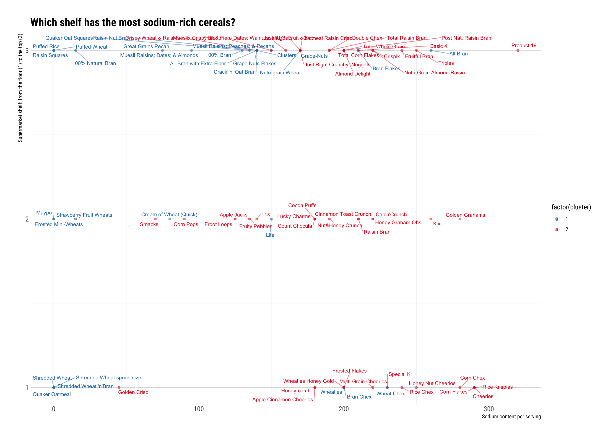

1 Summary
To see the all the code used in this post, visit my GitHub repository for this site
- Objectives: To find what what kind of clusters are there in the cereals dataset available on Kaggle.
- Challenge: To implement a clustering algorithm for the first time.
- Data points: 1232
- Language: R
2 Question
What types of clusters are there in the cereals dataset?
3 Dataset description
The dataset is available on Kaggle. It contains nutrition data on 80 cereal products. I chose this dataset because it had plenty of numeric variables and I’m interested in using two types of clustering algorithms to explore the data. Another reason I chose this dataset is because the data is unlabelled so I can add labels with clustering.
I wanted to focus on numeric variables using Euclidean distances. Not all variables in the dataset were numeric: the cereal name, the manufacturer, the type of cereal (hot or cold). There was also a numeric variable Shelf corresponding to the supemarket display shelf that doesn’t make much sense as a numeric variable, so I removed it from the analysis. After leaving just numeric variables, I was left with 12 variables.
I first scaled the data because I will calculate the Euclidean distance between each cereal but the variables are on different scales. When the data are scaled, the mean for each variable will be zero and a standard deviation of one.
4 Hierarchical clustering
I first implemented hierarchical clustering with three different linkage methods. Generally, the hierarchical clustering algorithm works by first linking the two observations that are closest together. It then chooses the closest observation based on a distance between the current observation and its distance to each element in a pair. That distance may vary according to the type of linkage as I show in the next tree diagrams (or dendrograms).

Figure 4.1: This tree diagram shows the complete linkage process. Here the algorithm chooses the closest MAXIMUM distance between the considered observation and the current pair. The height in the plot shows the distance between two observation. Each horizontal line represents the number of clusters. After choosing two clusters, we can say that maximum distance between observations in the two clusters is equal two or less than 11.06.

Figure 4.2: This is the average linkage with maximum height 7.57. Here the algorithm chooses the closest AVERAGE distance between the considered observation and the current pair. Although the maximum distance between obsverations in a cluster is shorter than in complete linkage, average linkage leads to one cluster with three observations and another with 74. This an unbalanced set of clusters.

Figure 4.3: Single linkage has even a smaller distance between observations with the maximum being 4.16. Here the algorithm chooses the closest MINIMUM distance between the considered observation and the current pair. Here 76 observations are in one cluster and one is in another.
I wanted balanced clusters so I ended up choosing the complete linkage method that classified observations more or less into two similar groups with one cluster having 30 observations and the other 47. Now I’d like to show the differences amongst clusters for each numerical variable.
| cluster | calories | protein | fat | sodium | fiber | carbo | sugars | potass | vitamins | rating | complete_count$n |
|---|---|---|---|---|---|---|---|---|---|---|---|
| 1 | 95.67 | 3.100 | 1.1000 | 99.5 | 3.44 | 13.42 | 4.20 | 128.13 | 18.33 | 54.65 | 30 |
| 2 | 114.04 | 2.192 | 0.9574 | 198.1 | 1.33 | 15.35 | 8.66 | 75.62 | 34.57 | 35.02 | 47 |
| Cluster 1 | Cluster 2 | |
|---|---|---|
| 1 | 7 | 13 |
| 2 | 5 | 16 |
| 3 | 18 | 18 |

